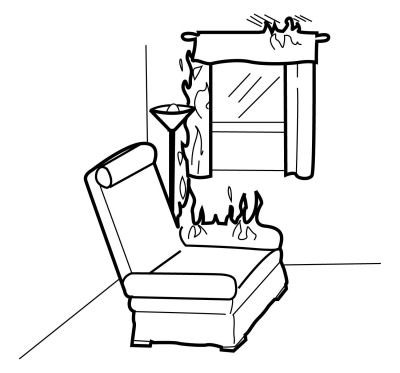

Man kan kvæle flammer ved at lægge et tæppe, en jakke, en presenning eller lignende hen over det, der brænder. Det er ofte den hurtigste måde at slukke småbrande på. Brug rolige bevægelser, og vift ikke med tæppet. Det vil tilføre [ ], som sætter mere fut i branden.
Men man kan ikke kvæle gløder. [ ] skal man altid efterslukke med vand, når man har kvalt flammerne i træ, papir eller andre faste stoffer. Ellers kan branden blusse op igen.
